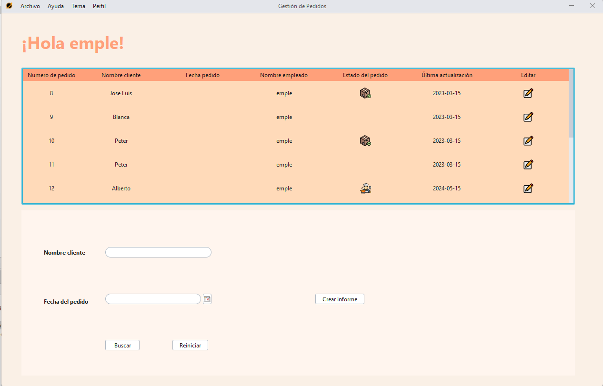
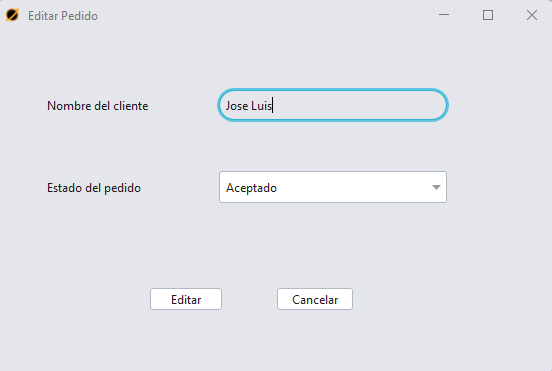
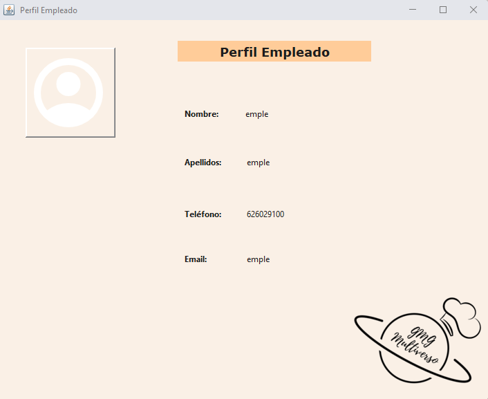

En
esta ventana cada empleado va a poder ver listado sus pedidos y además,
también podrá ver los pedidos que no tienen asignado ningun empleado.
Una vez
el empleado cambie el estado del pedido se quedará registrado a su nombre.

El empleado podrá solamente modificar el estado del pedido

Además tendrá una ventana donde podrá ver la información de su usuario.
